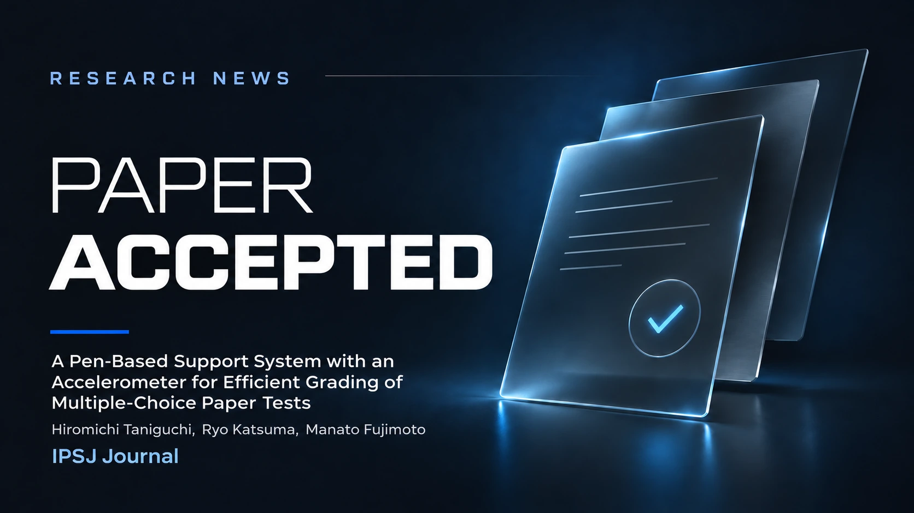
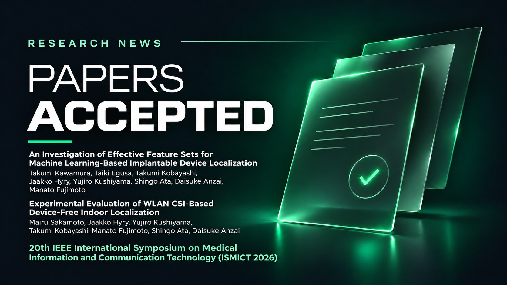
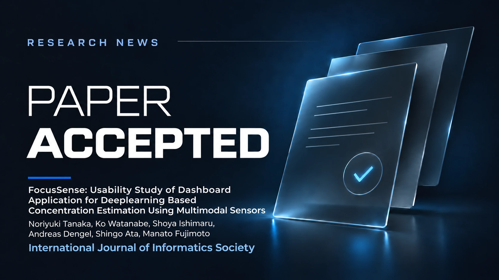
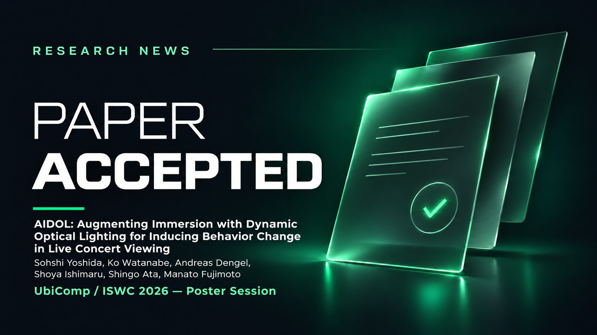
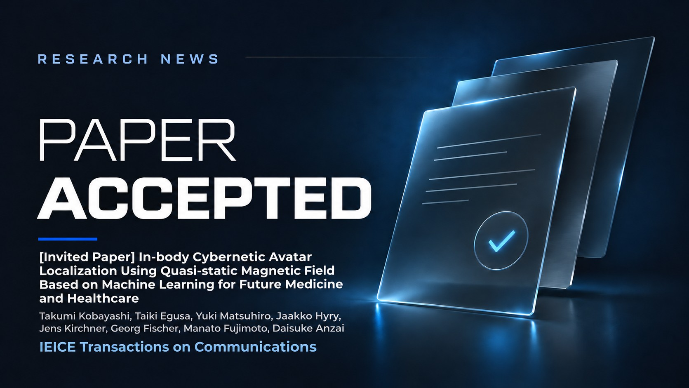
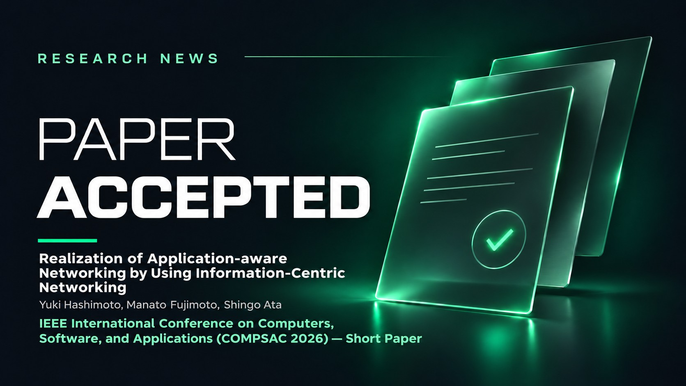
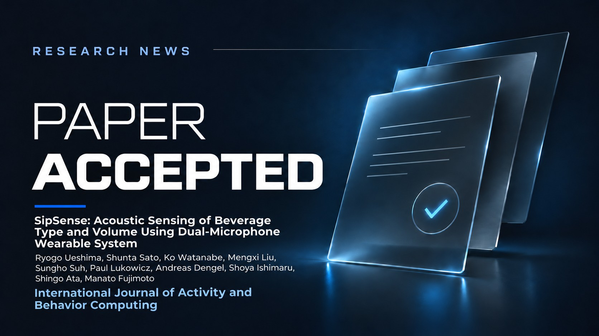
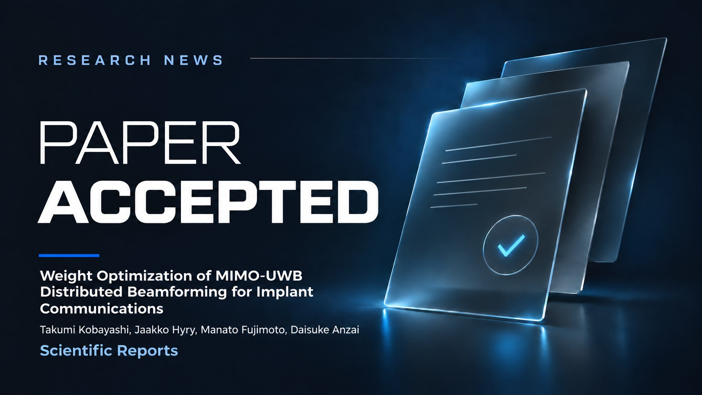

最新情報
お知らせ
2026
13件ENTER27に2件の論文が採択されました。
Analyzing Changes in Urban Pedestrian Movement Associated with Traffic Restrictions and Events Using BLE Observations ／ From Movement Records to Operational Insights: Movement Analysis Using Passive BLE Observations and Multiple Sequence Alignment
記事を読む →
情報処理学会論文誌に論文が採択されました。
加速度センサ搭載ペンによる多肢選択式ペーパーテストの採点作業効率化に向けた支援システム
記事を読む →CNSM 2026に1件の論文が採択されました。
RPL-FedID: Reliable Pseudo-Label-Enhanced Federated Device Identification
記事を読む →
ISMICT 2026に2件の論文が採択されました。
An Investigation of Effective Feature Sets for Machine Learning-Based Implantable Device Localization ／ Experimental Evaluation of WLAN CSI-Based Device-Free Indoor Localization
記事を読む →
FocusSenseの論文がInternational Journal of Informatics Societyに採択されました。
FocusSense: Usability Study of Dashboard Application for Deeplearning Based Concentration Estimation Using Multimodal Sensors
記事を読む →
UbiComp / ISWC 2026のポスターセッションに論文が採択されました。
AIDOL: Augmenting Immersion with Dynamic Optical Lighting for Inducing Behavior Change in Live Concert Viewing
記事を読む →応用老年学に論文が採択されました。
Be supporters!活動の事例報告 ―介護施設利用者のウェルビーイングに向けて―
記事を読む →
IEICE Transactions on Communicationsに招待論文が採択されました。
In-body Cybernetic Avatar Localization Using Quasi-static Magnetic Field Based on Machine Learning for Future Medicine and Healthcare
記事を読む →
IEEE Journal of Electromagnetics, RF, and Microwaves in Medicine and Biologyに論文が採択されました。
Power and Waveform Optimization for Implant Ultra-Wideband Communications Enhanced by Dynamic Sparse Control
記事を読む →
COMPSAC 2026に1件のショートペーパーが採択されました。
Realization of Application-aware Networking by Using Information-Centric Networking
記事を読む →IEEE Open Journal of the Computer Societyに論文が採択されました。
zk-REAL: A Zero-Knowledge-Based Protocol for Repeated Image Edit Authenticity Proof with Lattice Hashing
記事を読む →
International Journal of Activity and Behavior Computingに論文が採択されました。
SipSense: Acoustic Sensing of Beverage Type and Volume Using Dual-Microphone Wearable System
記事を読む →
Scientific Reportsに論文が採択されました。
Weight Optimization of MIMO-UWB Distributed Beamforming for Implant Communications
記事を読む →